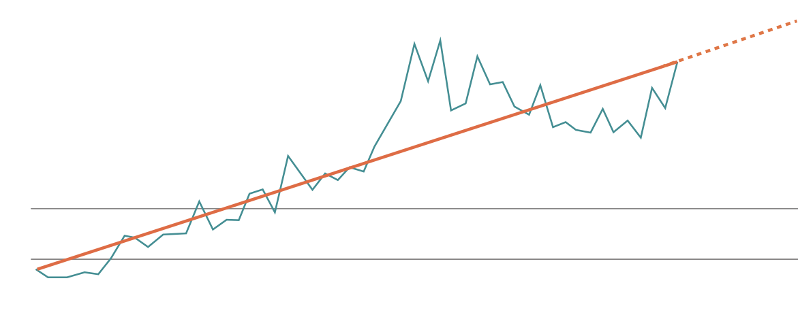

Entre 1970 y 2020, la frecuencia anual de desastres
de magnitud mediana y alta se mantuvo en 90-100
eventos. No obstante, entre 2001 y 2020, este
número experimentó un notable incremento a
350-500 anuales, señalando un drástico cambio en
la tendencia.
Tendencia Futura
Según el análisis de los datos acumulados hasta
2020 es posible establecer una tendencia futura de
aumento previsto de los fenómenos de desastres
del 40% para el año 2030. Este aumento subraya la
imperativa necesidad de abordar eficazmente los
riesgos asociados a estos fenómenos.

Servicios
Mapa de Riesgo
para identificar los potenciales efectos que
puede causar un desastre en el territorio y
en la infraestructura crítica de la organización.
Diagnóstico de Amenazas y Vulnerabilidades
para la identificación de nudos críticos dentro
de la organización. A raíz de ellas,
se proponen soluciones de diseño, gestión
y proyectos para la reducción de riesgos.
Plan de Acción
para fortalecer las capacidades de la
organización a través de planes y estrategias
para potenciar la prevención, mitigación
y preparación de las organizaciones.
Ejecución/Acompañamiento Plan de Acción
mediante una asesoría permanente,
que incorpora articulación y coordinación
con el mundo público y privado.
Asesoría Directiva en Gestión de Riesgo de Desastres
mediante comunicación constante, envío
de insumos estratégicos y reuniones
mensuales, con foco en analizar el entorno
sociopolítico y las contingencias y desafíos.
Talleres de Sensibilización
sobre gestión de riesgo para organizaciones,
comunidades aledañas y gestión de vocerías
y medios.
Simulaciones y Simulacros
para el ejercicio y preparación
de trabajadores y comunidades para
la respuesta ante desastres naturales.
Por cada dólar invertido en prevención y reducción de riesgos se pueden ahorrar hasta 15
dólares en la recuperación después de un desastre. Cada dolar invertido en la creación de
infraestructuras resistentes a los desastres ahorra 4 dólares en la reconstrucción.
(United Nations Office for Disaster Risk Reduction
UNDRR)
Nosotros
Nacemos el 2017 como Gestión
del Riesgo Consultores GRC,
con el objetivo de mejorar
los procesos de identificación
de necesidades y elaboración
de estrategias en torno a la
gestión de riesgo de desastres
en el sector público y privado.
Hoy somos Efectiva.
Reconocemos la mejora continua
como motor de nuestro desarrollo.
Nuestro compromiso está enfocado
en generar resultados tangibles
y soluciones innovadoras que mejoran
la vida de personas y organizaciones.